CAPÍTULO 3 - Polinômios
Redução de termos semelhantes
Observe os polígonos a seguir.
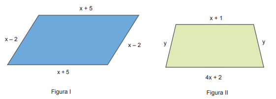

- Troque ideias com um colega e escrevam as expressões algébricas que representam os perímetros dos polígonos.
- Expliquem como vocês fizeram para calcular esses perímetros. Anotem as conclusões a que vocês chegarem no caderno.
A expressão algébrica que representa o perímetro de cada um dos polígonos denomina-se polinômio.
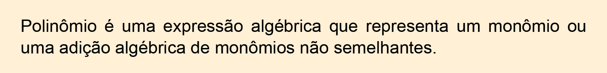
No cálculo do perímetro, fizemos o agrupamento de monômios que são semelhantes para obter um polinômio na sua forma reduzida.
Os polinômios recebem nomes especiais, observe:
Binômios: são polinômios que têm dois termos. Veja alguns exemplos:
- 4x + 5
- x - y
- 8x - 9
Trinômios: são polinômios que têm três termos. Veja alguns exemplos:
- 2x + 3y + 6
- - 4abc + 2b - 3c
- 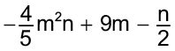
Polinômios com mais de três termos não possuem nomes especiais.
68
Grau de um polinômio
Observe os polinômios a seguir:
Dizemos que o primeiro polinômio é do 3.º grau, o segundo é do 6.º grau e o terceiro, do 9.º grau.
O grau de um polinômio reduzido corresponde ao termo não nulo de maior grau.
Operações com polinômios
Adição algébrica de polinômios
Juliana está construindo esqueletos de sólidos geométricos usando palitos de madeira e garrotes de borracha. Ela construiu os esqueletos de dois blocos retangulares. Para o primeiro, utilizou palitos com 3 medidas diferentes; para o segundo, palitos com 2 medidas diferentes.
![Ilustração de Juliana sentada em uma cadeira em frente a uma mesa. À frente dela um esqueleto de bloco retangular parcialmente completo feito com palitos de madeira. Os palitos de madeira para compor a largura e o comprimento do bloco têm tamanho igual e a altura feita com madeiras de tamanho menor. Garrotes de borracha unem os vértices do bloco. Na mão esquerda, Juliana segura uma peça de madeira. Mais à frente, um outro bloco retangular formado com palitos e garrotes de borracha. Os palitos de madeira para compor a largura, o comprimento e a altura do bloco têm tamanho igual.](../../resources/images/8ANO_U3_image/Mat-8A_U3_03.png)
Para construir esses esqueletos, Juliana não mediu o tamanho exato dos palitos, somente verificou, por meio de comparação, quais tinham o mesmo tamanho e quais não. Após a construção, ela representou no caderno, por meio de desenhos, os esqueletos dos sólidos geométricos que havia construído.
Para representar as medidas dos comprimentos dos palitos do primeiro sólido, ela utilizou as variáveis x, y e z. Como no segundo sólido ela utilizou duas medidas diferentes, em seu desenho usou as variáveis b e c, sendo que c foi utilizado para representar a medida da largura e do comprimento.
69
Troque ideias com um colega e no caderno façam o que se pede.
- Representem o desenho dos esqueletos dos sólidos construídos por Juliana. Utilizando as variáveis que ela usou, registrem as medidas das arestas desses sólidos.
- Escrevam os polinômios na sua forma reduzida que permitem calcular os comprimentos totais dos palitos de madeira utilizados para construir cada um dos esqueletos.
- Após a representação dos desenhos no caderno, Juliana utilizou uma régua e mediu o comprimento de cada um dos palitos que utilizou. No primeiro sólido, ela encontrou as medidas x = 18,5 cm, y = 15,7 cm e
z = 11,2 cm. Quantos centímetros de palitos de madeira foram usados para construir o primeiro esqueleto? - Para o esqueleto do segundo sólido, ela encontrou as medidas c = 17,8 cm e b = 14,6 cm. Quantos centímetros de palitos de madeira foram usados para construir o segundo esqueleto?
Na situação apresentada, realizamos a adição de polinômios para encontrar a sua forma reduzida.
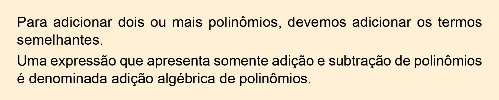
Observe alguns exemplos:
- (x2 + y3 + 2) + (- 3x2 + 2y3 - 10) = x2 + y3 + 2 - 3x2 + 2y3 - 10 = - 2x2 + 3y3 - 8
- (- 5ab + 7b2) + (- 9ab - 12b2) = - 5ab + 7b2 - 9ab - 12b2 = - 14ab - 5b2
- xy - ab - (5xy - 6ab) = xy - ab - 5xy + 6ab = - 4xy + 5ab
Encontre soluções
- Calcule em seu caderno.
- (y4 + 3y - 8) + (y4 - 5y + 3)
- (-10ab + 6b) + (-15b - 2ab)
- (8x2 + 3x - 11) + (-1 + 2x2 - 6x)
- (- 5b + 2c) - (-7c + 15b)
- (12xy - 13x + 5y) - (-10y + 3xy)
- Observe as figuras a seguir:
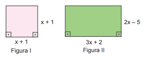
70
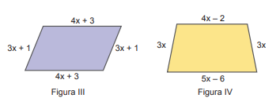
- Escreva os polinômios na sua forma reduzida que indicam o perímetro de cada uma delas.
- Calcule o perímetro em cada um dos casos. Considere que x = 5 cm.
- Sejam os polinômios:
A = y2 + 3y - 7
B = - 4y2 - y + 1
C = y + 6
Calcule:
- A + B
- A + C
- B - C
- A + B + C
- C - A
- A + B - C
- A - B - C
- A - B
Multiplicação de polinômios
Observe as figuras a seguir:
Vamos escrever os polinômios, na sua forma reduzida, que representam a área de cada uma das figuras.
- Figura I: x(x + 1)
- Figura II: (x + 4)(x + 2)
Para encontrarmos os polinômios na sua forma reduzida, vamos aplicar a propriedade distributiva:
- Figura I: x (x + 1) = x2 + x
- Figura II: (x + 4) (x + 2) = x2 + 2x + 4x + 8 = x2 + 6x + 8
Portanto, a área da figura I é representa pelo polinômio reduzido x2 + x e a área da figura II, pelo polinômio reduzido x2 + 6x + 8.
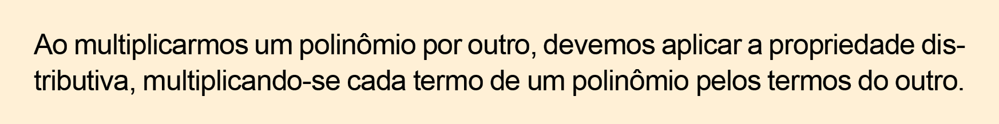
Observe outros exemplos:
- 9y (y + 3) = 9y2 + 27y
- (x + 2)(x - 1) = x2 - x + 2x - 2 = x2 + x - 2
- b(b - 4)(b - 3) = (b2 - 4b)(b - 3) = b3 - 3b2 - 4b2 + 12b = b3 - 7b2 + 12b
71
Encontre soluções
- Resolva em seu caderno.
- 4 (x + 2)
- 7y (y2 - 4)
- - b2 (5b3 + 6b)
- 11x (x4 - 5x2 + 8)
- 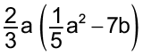
- 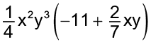
- 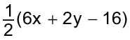
- 4m5 (m - 2 + m2)
- 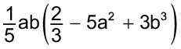
- Dados os polinômios:
A = - x + 2
B = 4x - 5
C = - x - 7
Calcule:
- A ∙ B
- B ∙ C
- A (B + C)
- B (A - C)
- C (A + B)
- A ∙ B - B ∙ C
- Escreva o polinômio que representa a área da região colorida.
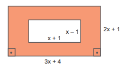
- Resolva os produtos a seguir no caderno.
- (x + 3)(x + 2)
- (b - 5)(b3 + 2c)
- (y4 + 3)(y4 - 3)
- (ab + 1)(a - b)
- (-3xy + x)(y - 4)
- No caderno, calcule:
- (x + 4)2
- (9 - b)2
- (3y + 5)2
- (x - y)3
- No caderno, escreva o polinômio que representa o volume do sólido geométrico.
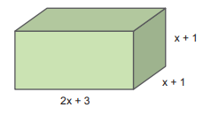
- (OBMEP) O que representam, geometricamente, na figura dada, as expressões
a2 + 1,5a e 4a + 3?
72
Divisão de um polinômio por um monômio
Observe a figura a seguir:
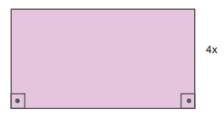
A altura do retângulo foi representada por 4x. Se a área desse retângulo é igual a 16x4 - 8x2 + 4x, qual é o polinômio que representa a base do retângulo?
Como a área de um retângulo pode ser calculada multiplicando-se a medida da base pela medida da altura, para resolver essa situação podemos utilizar a operação inversa da multiplicação para descobrir o polinômio que representa a base. Observe:
- (16x4 - 8x2 + 4x) : (4x) = (16x4) : (4x) - (8x2) : (4x) + (4x) : (4x) = 4x3 - 2x + 1
Portanto, a base desse retângulo é representada pelo polinômio 4x3 - 2x + 1.
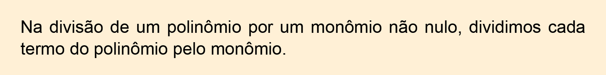
Observe outros exemplos.
- (12y6 + 3y2) : (3y) = 4y5 + y
- (b4 - b3 + b) : (b) = b3 - b2 + 1
- (2ab3 + 10a3b - 18a6b7) : (2ab) = b2 + 5a2 - 9a5b6
Encontre soluções
- Calcule em seu caderno.
- (15x3 - 10x) : (5x)
- (8y5 + 48y3) : (8y2)
- (b7 - b5 - b3) : (b)
- (-121ab3c4 - 33a4b2c) : (11abc)
- (- 63x8y6 + 77x5y7) : (-7x3y2)
- 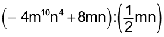
- Sendo 81x6y4 - 18x2y2 o polinômio que representa a área de um retângulo, determine o polinômio que representa sua base, sabendo que sua altura é igual a 9x2y2.
- Dados os polinômios:
A = -36x8y7 + 24x6y5
B = 12x8y7 - 4x6y5
C = 2x6y5
Em seu caderno, determine:
- A + B + C
- A - B + C
- B ∙ C
- A : C
- B : C
- (A + B) : C